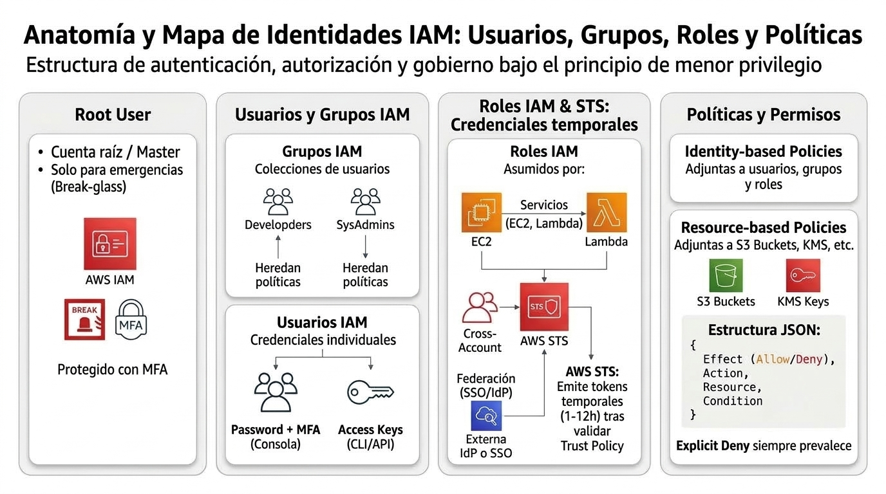
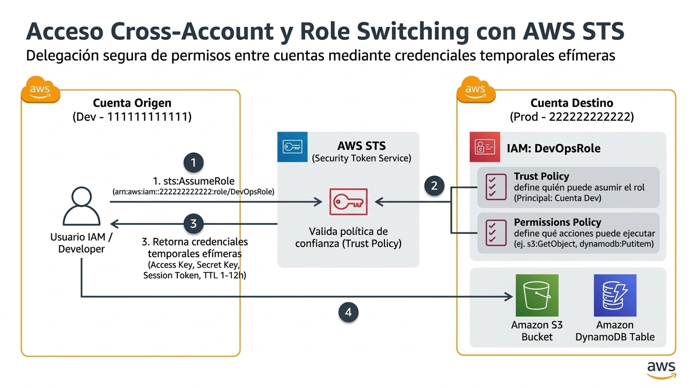

IAM AWS Identity and Access Management
El servicio de identidad y acceso que sostiene el dominio más pesado del examen (D1, 30%): quién puede hacer qué, en qué cuenta, y con qué permisos.
AWS IAM es el servicio que responde dos preguntas para cualquier operación en AWS: ¿quién eres? (autenticación) y ¿qué puedes hacer? (autorización). Piénsalo como la recepción de un edificio corporativo: el root user es el dueño del edificio (tiene la llave maestra y casi nunca debe usarla), los usuarios son empleados con credenciales propias, los grupos son departamentos que heredan permisos, y los roles son credenciales temporales que se "visten" cuando alguien necesita atravesar una puerta concreta — sin llevar llaves permanentes.
El examen no pregunta pantallas de la consola: pregunta decisiones de diseño. La regla número uno que debes interiorizar se llama least privilege (principio de mínimo privilegio): cada identidad debe poder hacer exactamente lo que necesita y nada más. La segunda regla es que las aplicaciones nunca usan usuarios IAM con access keys: usan roles, porque sus credenciales son temporales y rotan automáticamente vía AWS STS.

Los cuatro objetos de IAM que debes dominar
| Objeto | Qué es | Cuándo usarlo (regla de examen) |
|---|---|---|
| Usuario IAM | Identidad permanente con credenciales (contraseña y/o access keys) | Personas que necesitan acceso a la consola o CLI. Cada persona del equipo = un usuario IAM (o mejor: federación). Nada de compartir usuarios. |
| Grupo | Contenedor de usuarios al que se adjuntan políticas | Asignar permisos por función (Developers, DBAs, Auditoría). Adjuntas la política al grupo, no usuario por usuario. |
| Rol | Identidad sin credenciales permanentes; cualquiera puede "asumirlo" (assume role) si la política de confianza se lo permite | Aplicaciones en EC2/Lambda, acceso entre cuentas (cross-account), federación de usuarios de empresa. La respuesta por defecto cuando el enunciado menciona acceso temporal o aplicaciones. |
| Política | Documento JSON con permisos (Effect: Allow/Deny, Action, Resource) | La unidad mínima de permiso. Distingue identity policy (adjunta a usuario/grupo/rol) de resource policy (adjunta al recurso, p. ej. bucket policy de S3). |
El root user y las buenas prácticas oficiales
La cuenta AWS nace con una identidad todopoderosa: el root user. La lista oficial de buenas prácticas de IAM (que el exam guide cita explícitamente en el Task Statement 1.1) pide: activar MFA en el root user, no usarlo para tareas diarias, crear usuarios/roles administrativos para el trabajo cotidiano, aplicar least privilege, auditar con CloudTrail e IAM Access Analyzer, rotar credenciales y — la modernización más citada — usar el IAM Identity Center (antes AWS SSO) para gestionar el acceso humano centralizado en lugar de usuarios IAM sueltos.
Cross-account access: el patrón del role switching
Cuando varias cuentas AWS necesitan colaborar (producción, desarrollo, seguridad), el patrón oficial es el role switching: la cuenta A confía (trust policy) en usuarios de la cuenta B para asumir un rol. El usuario de B solicita credenciales temporales a AWS STS (AssumeRole), recibe un token de hasta 12 horas, y opera en A con los permisos del rol. Este flujo aparece en preguntas de multi-cuenta (que se resuelven junto a AWS Organizations y SCPs) y es la base de la federación con directorios corporativos.

sts:AssumeRole apuntando al ARN del rol en la cuenta destino (Prod). AWS STS valida la Trust Policy del rol y retorna credenciales efímeras (Access Key, Secret Key y Session Token válidos de 1 a 12 horas). Con esas credenciales temporales, el usuario opera directamente sobre los recursos autorizados en producción (Amazon S3, DynamoDB) según la Permissions Policy, evitando claves permanentes y reduciendo la superficie de ataque.Cómo cae en el examen: señales y trampas
| Si el enunciado dice… | La respuesta apunta a… |
|---|---|
| "application running on EC2 needs access to DynamoDB" | IAM role attached to the EC2 instance profile |
| "employees already authenticate with the corporate directory" | Federation / IAM Identity Center (AWS SSO) con roles |
| "grant temporary access to an auditor" | IAM role con trust policy + STS |
| "users in account B must manage resources in account A" | Cross-account role (role switching) |
| "enforce permissions across all accounts in the organization" | SCPs en AWS Organizations (no bastan políticas IAM) |
| "credentials hardcoded in code" | Distractor: la solución correcta usa roles + Secrets Manager |
Vocabulario EN que debes reconocer al vuelo
| Término EN | Significado |
|---|---|
| least privilege | Mínimo privilegio: solo los permisos necesarios |
| assume role / role switching | Asumir un rol (credenciales temporales) |
| trust policy | Política de confianza: quién puede asumir el rol |
| identity vs resource policy | Política en la identidad vs política en el recurso (S3 bucket policy) |
| explicit deny | Niega explícita: siempre gana sobre cualquier Allow |
| federated access | Acceso federado desde un IdP externo (directorio, SSO) |
- Least privilege es la respuesta por defecto de toda pregunta de permisos.
- Aplicaciones (EC2, Lambda, ECS) usan roles, nunca usuarios con keys.
- El root user con MFA existe para tareas de emergencia, no para el día a día.
- STS emite credenciales temporales;
AssumeRolees el verbo del cross-account. - Grupos para humanos, roles para todo lo demás.
- Multi-cuenta = Organizations + SCPs (+ Control Tower como opción gestionada).
- FND-11 IAM User Guide — Introduction · docs.aws.amazon.com/IAM/latest/UserGuide/introduction.html
- FND-12 IAM — Security best practices · docs.aws.amazon.com/IAM/latest/UserGuide/best-practices.html
- FND-13 IAM — Roles · docs.aws.amazon.com/IAM/latest/UserGuide/id_roles.html
- FND-14 IAM — Policies and permissions · docs.aws.amazon.com/IAM/latest/UserGuide/access_policies.html
- FND-15 AWS STS — API reference · docs.aws.amazon.com/STS/latest/APIReference/welcome.html
- FND-16 IAM Identity Center (AWS SSO) · docs.aws.amazon.com/singlesignon/latest/userguide/what-is.html
- SEC-16 AWS Directory Service · docs.aws.amazon.com/directoryservice/latest/admin-guide/what_is.html